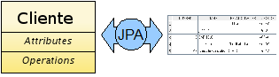
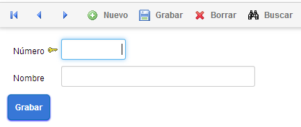
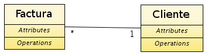
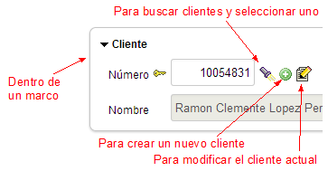
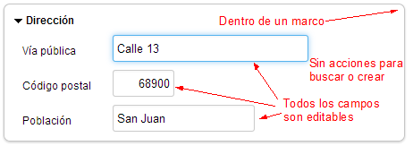
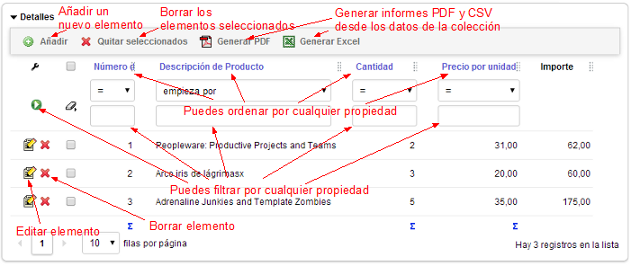
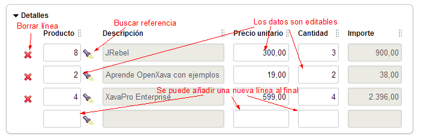

Java Persistence API (JPA) es el estándar Java para hacer mapeo objeto-relacional. El mapeo objeto-relacional te permite acceder a los datos en una base de datos relacional usando un estilo orientado a objetos. En tu aplicación solo trabajas con objetos, estos objetos se declaran como persistentes, y es responsabilidad del motor JPA leer y grabar los objetos desde la base de datos a la aplicación.
JPA mitiga el famoso problema de desajuste de impedancia, que se produce porque las bases de datos relacionales tienen una estructura, tablas y columnas con datos simples, y las aplicaciones orientadas a objetos otra, clases con referencias, colecciones, interfaces, herencia, etc. Es decir, si en tu aplicación estás usando clases Java para representar conceptos de negocio, tendrás que escribir bastante código SQL para escribir los datos desde tus objetos a la base de datos y viceversa. JPA lo hace para ti.
Este lección es una introducción a JPA. Para una completa inmersión en esta tecnología estándar necesitarías leer un libro completo sobre JPA, de hecho, se citan algunos en el sumario de esta lección. OpenXava soporta Jakarta Persistence 3.2 desde v8.0 (y JPA 2.2 desde v6.1 hasta v7.x).
Por otra parte, si ya conoces JPA puedes saltarte esta lección.
JPA tiene 2 aspectos diferenciados, el primero es un conjunto de anotaciones Java para añadir a tus clases marcándolas como persistentes y dando detalles acerca del mapeo entre las clases y las tablas. Y el segundo es un API para leer y escribir objetos desde tu aplicación. Veamos primero las anotaciones.
En la nomenclatura JPA a una clase persistente se le llama entidad. Podemos decir que una entidad es una clase cuyas instancias se graban en la base de datos. Usualmente cada entidad representa un concepto del dominio, por lo tanto usamos una entidad JPA como base para definir un componente de negocio en OpenXava, de hecho puedes crear un aplicación completa de OpenXava a partir de simples entidades JPA. Una entidad JPA se define así:
@Entity // Para definir esta clase como persistente
@Table(name="GSTCST") // Para indicar la tabla de la base de datos (opcional)
public class Cliente {Como puedes ver solo has de marcar tu clase con la anotación @Entity y opcionalmente también con la anotación @Table, en este caso estamos diciendo que la entidad Cliente se graba en la tabla GSTCST de la base de datos. De ahora en adelante, JPA guardará y recuperará información entre los objetos Cliente en la aplicación y la tabla GSTCST en la base de datos, como se muestra aquí:

Además, marcar Cliente con @Entity es suficiente para que OpenXava la reconozca como un componente de negocio. Sí, en OpenXava “entidad” es sinónimo de componente de negocio.El estado básico de una entidad se representa mediante propiedades. Las propiedades de una entidad son propiedades Java convencionales, con getters y setters:
private String nombre;
public String getNombre() {
return nombre;
}
public void setNombre(String nombre) {
this.nombre = nombre;
}Por defecto las propiedades son persistentes, es decir, JPA asume que la propiedad nombre se almacena en la columna llamada 'nombre' de la tabla en la base de datos. Si quieres que una determinada propiedad no se guarde en la base de datos has de marcarla como @Transient:
@Transient // Marcada como transitoria, no se almacena en la base de datos
private String nombre;
public String getNombre() {
return nombre;
}
public void setNombre(String nombre) {
this.nombre = nombre;
}Nota que hemos anotado el campo, puedes anotar el getter en su lugar, si así lo prefieres:
private String nombre;
@Transient // Marcamos el getter, por tanto todas las anotaciones JPA
public String getNombre() { // en esta entidad tienen que estar en los getters
return nombre;
}
public void setNombre(String nombre) {
this.nombre = nombre;
}Esta norma aplica a todas la anotaciones JPA, puedes anotar el campo (acceso basado en el campo) o el getter (acceso basado en la propiedad), pero no mezcles los dos estilos en la misma entidad.
Otras anotaciones útiles para las propiedades son @Column para especificar el nombre y longitud de la columna de la tabla, e @Id para indicar que propiedad es la propiedad clave. Puedes ver el uso de estas anotaciones en la ya utilizable entidad Cliente:
@Entity
@Table(name="GSTCST")
public class Cliente {
@Id // Indica que number es la propiedad clave (1)
@Column(length=5) // Aquí @Column indica solo la longitud (2)
private int numero;
@Column(name="CSTNAM", length=40) // La propiedad name se mapea a la columna
private String nombre; // CSTNAM en la base de datos
public int getNumero() {
return numero;
}
public void setNumero(int numero) {
this.numero = numero;
}
public String getNombre() {
return nombre;
}
public void setNombre(String nombre) {
this.nombre = nombre;
}
}Es obligatorio que al menos una propiedad sea clave (1). Has de marcar la propiedad clave con @Id y normalmente se mapea contra la columna clave de la tabla. @Column puede usarse para indicar la longitud sin el nombre de columna (2). La longitud es usada por el motor JPA para la generación de esquema, pero también es usada por OpenXava para conocer el tamaño del editor en la interfaz de usuario. A partir del código de la entidad Cliente OpenXava genera la siguiente interfaz de usuario:

Ahora que ya sabes como definir propiedades básicas en tu entidad, aprendemos como declarar relaciones entre entidades usando referencias y colecciones.
Una entidad puede hacer referencia a otra entidad. Únicamente has de definir una referencia Java convencional anotada con la anotación JPA @ManyToOne:
@Entity
public class Factura {
@ManyToOne( // La referencia se almacena como una relación a nivel de base de datos (1)
fetch=FetchType.LAZY, // La referencia se cargará bajo demanda (2)
optional=false) // La referencia tiene que tener valor siempre
@JoinColumn(name="INVCST") // INVCST es la columna para la clave foranea (3)
private Cliente cliente; // Una referencia Java convencional (4)
// Getter y setter para clienteComo puedes ver hemos declarado una referencia a Cliente dentro de Factura en un estilo Java simple y llano (4). @ManyToOne (1) es para indicar que esta referencia se almacenará en la base de datos como una relación muchos-a-uno entre la tabla para Factura y la tabla para Cliente, usando la columna INVCST (3) como clave foránea. @JoinColumn (3) es opcional. JPA asume valores por defecto para las columnas de unión (CLIENTE_NUMERO en este caso).
Si usas fetch=FetchType.LAZY (3) los datos del objeto Cliente no se cargarán hasta que se usen por primera vez. Es decir, en el momento justo que uses la referencia a Cliente, por ejemplo, llamando al método factura.getCliente().getNombre() los datos del Cliente son cargados desde la base de datos. Es aconsejable usar siempre lazy fetching.
Una referencia Java convencional normalmente corresponde a una relación @ManyToOne en JPA y a una asociación *..1 en UML:

Esta es la interfaz de usuario que OpenXava genera automáticamente para una referencia:

Has visto como hacer referencia a otras entidades, pero también puedes hacer referencia a otros objetos que no son entidades, por ejemplo, a objetos incrustados.
Además de entidades puedes usar clases incrustables para modelar algunos conceptos de tu dominio. Si tienes una entidad A que tiene una referencia a B, modelarías B como una clase incrustable cuando:
A veces el mismo concepto puede ser modelado como incrustable o como entidad. Por ejemplo, el concepto de dirección. Si una dirección es compartida por varias personas entonces tienes que usar una referencia a una entidad, mientras que si cada persona tiene su propia dirección quizás un objeto incrustable sea mejor opción.
Modelemos una dirección como una clase incrustable. Es fácil, simplemente crea una simple clase Java y anótala como @Embeddable:
@Embeddable // Para definir esta clase como incrustable
public class Direccion {
@Column(length=30) // Puedes usar @Column como en una entidad
private String viaPublica;
@Column(length=5)
private int codigoPostal;
@Column(length=20)
private String poblacion;
// Getters y setters
...
}Y ahora, crear una referencia a Direccion desde una entidad también es fácil. Se trata simplemente de una referencia Java normal anotada como @Embedded:
@Entity
@Table(name="GSTCST")
public class Cliente {
@Embedded // Referencia a una clase incrustable
private Direccion direccion; // Una referencia Java convencional
// Getter y setter para address
...
}Desde el punto de vista de la persistencia un objeto incrustable se almacena en la misma tabla que su entidad contenedora. En este caso las columnas viaPublica, codigoPostal y poblacion están en la tabla para Cliente. Direccion no tiene tabla propia.
OpenXava genera automáticamente para una referencia a una clase incrustable una interfaz de usuario como esta:

Una entidad puede tener una colección de entidades. Sólo has de definir una colección de Java convencional anotada con las anotaciones JPA @OneToMany o @ManyToMany:
@Entity
public class Cliente {
@OneToMany( // La colección es persistente (1)
mappedBy="cliente") // La referencia cliente de Factura se usa
// para mapear la relación a nivel de base de datos (2)
private Collection facturas; // Una colección Java convencional (3)
// Getter y setter para facturas
...
} Como puedes ver declaramos una colección de entidades Factura dentro de Cliente en un estilo Java plano (3). @OneToMany (1) es para indicar que esta colección se almacena en la base de datos con una relación uno-a-muchos entre la tabla para Cliente y la tabla para Factura, usando la columna de cliente en Factura (normalmente una clave foránea hacia la tabla de Cliente desde la tabla de Factura) .
Una colección de entidades en Java corresponde a una relación @OneToMany o @ManyToMany en JPA y a una asociación con una multiplicidad 1..* o *..* en UML:
Se puede simular la semántica de los objetos incrustados usando una colección de entidades con el atributo cascade de @OneToMany:
@Entity
public class Factura {
@OneToMany (mappedBy="factura",
cascade=CascadeType.REMOVE) // Cascade REMOVE para simular incrustamiento
private Collection detalles;
// Getter y setter para detalles
...
} Ahora definamos la entidad DetalleFactura:
DetalleFactura es una entidad:
@Entity
public class DetalleFactura {
...
}Así, cuando una factura se borra sus líneas de detalle se borran también. Podemos decir que una factura tiene líneas de detalle.
Esta es la interfaz de usuario que OpenXava genera automáticamente para una colección de entidades:

Hay algunas ligeras diferencias en el comportamiento de la interfaz de usuario si usas cascade REMOVE o ALL. Con cascade REMOVE o ALL cuando el usuario pulsa para añadir un nuevo elemento, puede introducir todos los datos del elemento, por otra parte si tu colección no es cascade REMOVE o ALL , cuando el usuario pulsa para añadir un nuevo elemento se muestra una lista de entidades para escoger.
Además, se puede definir una colección de auténticos objetos embebidos. Podriamos reescribir el ejemplo de los detalles de factura así:
@Entity
public class Factura {
@ElementCollection
private Collection detalles;
// Getter and setter for details
...
} Fíjate que anotamos la colección con @ElementCollection. En este caso DetalleFactura es una clase incrustada anotada con @Embeddable:
@Embeddable
public class DetalleFactura {
...
}La interfaz de usuario que OpenXava genera para una @ElementCollection:

En una colección de elementos (@ElementCollection) el usuario puede editar cualquier propiedad de cualquier fila en cualquier momento. También se puede quitar y añadir filas, pero los datos no se grabarán en la base de datos hasta que la entidad principal se grabe.
Hay muchos casos que se pueden modelar con @OneToMany(cascade=CascadeType.REMOVE) o @ElementCollection. Ambas opciones borran los elementos de la colección cuando la entidad contenedora se borra. Ambas opciones tiene la semántica de incrustado, es decir podemos decir "tiene un". Escoger una opción es fácil para un programador OpenXava, porque cada opción genera una interfaz de usuario totalmente diferente.
Es mejor evitar el uso de claves compuestas. Siempre tienes la opción de usar un identificador oculto autogenerado. Aunque, algunas veces tienes la necesidad de conectarte a bases de datos legadas o puede que el diseño del esquema lo haya hecho alguien que le gustan las claves compuestas, y no tengas otra opción que usar claves compuestas aunque no sea lo ideal. Por lo tanto, vamos a aprender como usar una clave compuesta.
Veamos una versión sencilla de una entidad Factura:
package com.tuempresa.facturacion.modelo;
import java.time.*;
import java.util.*;
import jakarta.persistence.*; // javax.persistence.* antes de OpenXava 8.0
import org.openxava.annotations.*;
@Entity
@IdClass(FacturaKey.class) // La clase id contiene todas las propiedades clave (1)
public class Factura {
@Id // Aunque tenemos las clase id aún es necesario marcarlo como @Id (2)
@Column(length = 4)
private int anyo;
@Id // Aunque tenemos las clase id aún es necesario marcarlo como @Id (2)
@Column(length = 6)
private int numero;
@Required
private LocalDate fecha;
@Stereotype("MEMO")
private String observaciones;
// RECUERDA GENERAR LOS GETTERS Y SETTERS PARA LOS CAMPOS
}
Si quieres usar anyo y numero como clave compuesta para Factura, una forma de hacerlo, es marcándolos con @Id (2), y además tener una clase id (1). La clase id tiene que tener anyo y numero como propiedades. Puedes ver FacturaKey aquí:
package com.tuempresa.facturacion.modelo;
public class FacturaKey implements java.io.Serializable { // La clase key tiene que ser serializable
private int anyo; // Contiene las propiedades marcadas ...
private int numero; // ... como @Id en la entidad
public boolean equals(Object obj) { // Ha de definir el método equals
if (obj == null) return false;
return obj.toString().equals(this.toString());
}
public int hashCode() { // Ha de definir el método hashCode
return toString().hashCode();
}
public String toString() {
return "FacturaKey::" + anyo + ":" + numero;
}
// RECUERDA GENERAR LOS GETTERS Y SETTERS PARA anyo Y numero
}
En este código se ven algunos de los requerimientos para una clase id, como el ser serializable e implementar hashCode() y equals(). OpenXava Studio (o Eclipse) puede generartelos con Source > Generate hashCode() and equals()...
Has visto como escribir tus entidades usando anotaciones JPA, y como OpenXava las interpreta para así generar una interfaz de usuario adecuada. Ahora vas a aprender como usar el API JPA para leer y escribir de la base de datos de desde tu propio código.
La clase de JPA más importante es jakarta.persistence.EntityManager (javax.persistence.EntityManager antes de OpenXava 8.0). Un EntityManager te permite grabar, modificar y buscar entidades.
El siguiente código muestra la forma típica de usar JPA en una aplicación no OpenXava:
EntityManagerFactory f = // Necesitas un EntityManagerFactory para crear un manager
Persistence.createEntityManagerFactory("default");
EntityManager manager = f.createEntityManager(); // Creas el manager
manager.getTransaction().begin(); // Has de empezar una transacción
Cliente cliente = new Cliente(); // Ahora creas tu entidad
cliente.setNumero(1); // y la rellenas
cliente.setNombre("JAVI");
manager.persist(cliente); // persist marca el objeto como persistente
manager.getTransaction().commit(); // Al confirmar la transacción los cambios se
// efectúan en la base de datos
manager.close(); // Has de cerrar el managerVes como es una forma muy verbosa de trabajar. Demasiado código burocrático. Si así lo prefieres puedes usar código como éste dentro de tus aplicaciones OpenXava, aunque OpenXava te ofrece una forma más sucinta de hacerlo:
Cliente cliente = new Cliente();
cliente.setNumero(1);
cliente.setNombre("PEDRO");
XPersistence.getManager().persist(cliente); // Esto es suficiente (1)Dentro de un aplicación OpenXava puedes obtener el manager mediante la clase org.openxava.jpa.XPersistence. No necesitas cerrar el manager, ni arrancar y parar la transacción. Este trabajo sucio lo hace OpenXava por ti. El código de arriba es suficiente para grabar una nueva entidad en la base de datos (1).
Si quieres modificar una entidad existente has de hacerlo así:
Cliente cliente = XPersistence.getManager()
.find(Cliente.class, 1); // Primero, buscas el objeto a modificar (1)
cliente.setNombre("PEDRITO"); // Entonces, cambias el estado del objeto. Nada másPara modificar un objeto solo has de buscarlo y modificarlo. JPA es responsable de grabar los cambios en la base de datos al confirmar la transacción (a veces antes), y OpenXava confirma las transacciones JPA automáticamente.
Has visto como encontrar por clave primaria, usando find(). Además, JPA te permite usar consultas:
Cliente pedro = (Cliente) XPersistence.getManager()
.createQuery(
"from Cliente c where c.nombre = 'PEDRO'") // Consulta JPQL (1)
.getSingleResult(); // Para obtener una única entidad (2)
List pedros = XPersistence.getManager()
.createQuery(
"from Cliente c where c.nombre like 'PEDRO%'") // Consulta JPQL
.getResultList(); // Para obtener una colección de entidades (3)Puedes usar el lenguaje de consultas de JPA (Java Persistence Query Language, JPQL, 1) para crear consultas complejas sobre tu base de datos, y obtener una entidad única, usando el método getSingleResult() (2), o una colección de entidades mediante el getResultList() (3).
Esta lección ha sido una breve introducción a la tecnología JPA. Por desgracia, muchas e interesantes cosas sobre JPA se nos han quedado en el tintero, como la herencia, el polimorfismo, las claves compuestas, relaciones uno a uno y muchos a muchos, relaciones unidireccionales, métodos de retrollamada, consultas avanzadas, etc. De hecho, hay más de 80 anotaciones en JPA. Necesitaríamos varios libros completos para aprender todos los detalles sobre JPA.
Afortunadamente, tendrás la oportunidad de aprender algunos casos de uso avanzados de JPA en el transcurso de este curso. Y si aun quieres aprender más, lee libros y referencias, como por ejemplo:
JPA es una tecnología indisputable en el universo Java de empresa, por tanto todo el conocimiento y código que acumulemos alrededor de JPA es siempre una buena inversión.